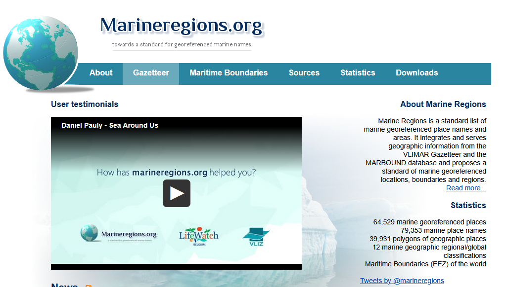
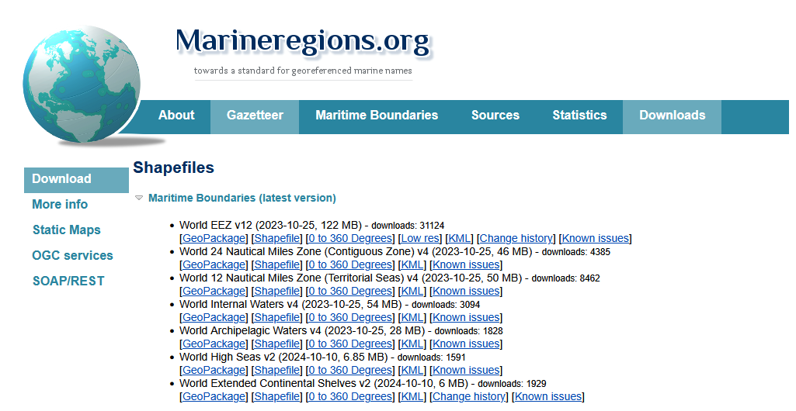
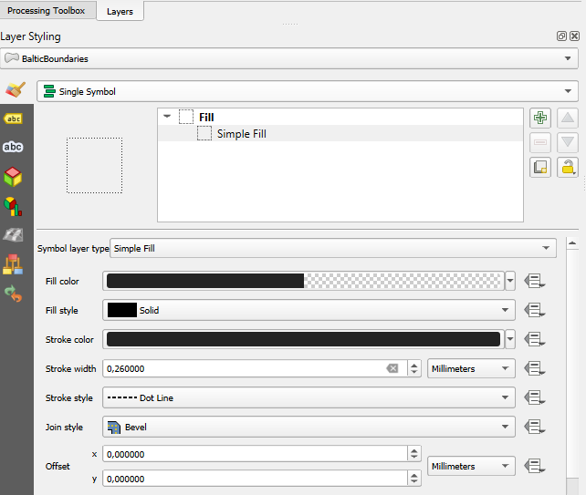
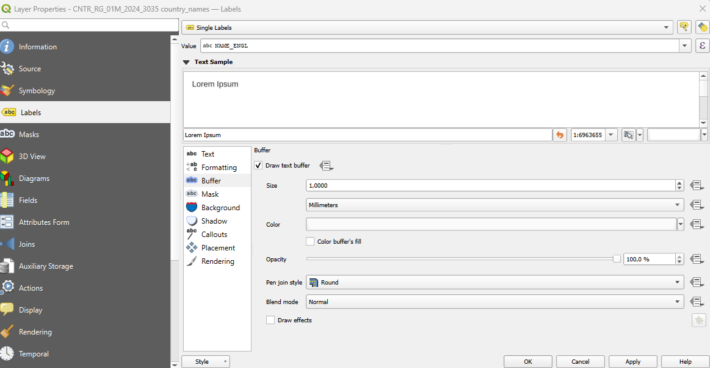
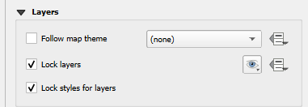
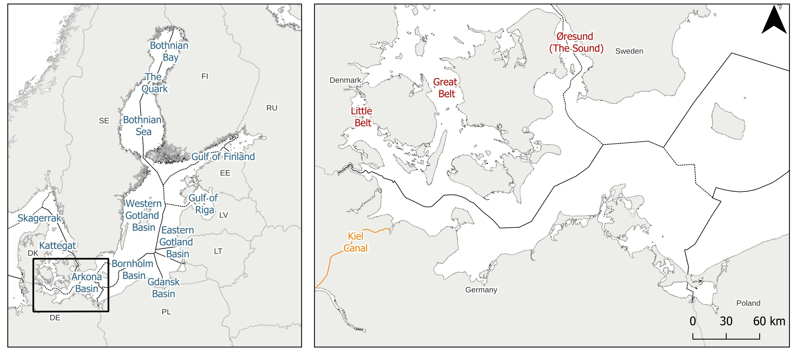

Add borders in QGIS
This blog post focuses on mapping maritime borders and country boundaries in QGIS.
Intro
This post focuses on mapping maritime borders and country boundaries in the Baltic Sea using QGIS, presented through a side-by-side map layout that combines different scale contexts.
Marine Regions
The Baltic Sea is a marginal sea of the Atlantic Ocean, enclosed by Denmark, Estonia, Finland, Germany, Latvia, Lithuania, Poland, Russia, Sweden, and the North and Central European Plains. It is the world’s largest brackish water basin.
Marine Regions is a global, standardized georeferenced database and mapping system managed by the Flanders Marine Institute that integrates marine place names and maritime boundaries to improve the identification, management, and linking of marine geographic data across research, biogeographic, and policy applications.

The Marine Regions dataset provides downloadable GIS shapefiles of global maritime boundaries, accessible under the Downloads > Maritime Boundaries (latest version), Link.

QGIS
To visualize the Maritime Borders in QGIS, Layer > Add Layer > Add Vector Layer can be used to load the dataset. From the file World_EEZ_v12_20231025.zip, the dataset eez_v12.shp contains polygon features representing Exclusive Economic Zones, and eez_boundaries_v12.shp contains corresponding boundary line geometries.
Country Poligons
For the Baltic, the focus involves Germany, Denmark, Sweden, and Poland.
To identify relevant features, the Identify Features tool allows a quick inspection of geometries and attributes.
In the attribute table, clicking on Select Features by Expression (the ε icon) allows to isolate relevant features. In the expression window, the names of the selected features can be entered. The values can be adjusted as needed to match specific projects.
GEONAME IN (
'German Exclusive Economic Zone',
'Danish Exclusive Economic Zone',
'Polish Exclusive Economic Zone',
'Swedish Exclusive Economic Zone',
'Estonian Exclusive Economic Zone',
'Finnish Exclusive Economic Zone',
'Lithuanian Exclusive Economic Zone',
'Latvian Exclusive Economic Zone',
'Russian Exclusive Economic Zone')Afterwards, clicking on Select Features, will highlight the corresponding polygons in the map, confirming that they have been successfully selected.
Symbology
For styling the layers, Symbology > select Single Symbol, ensures a cleaner visual representation of the maritime boundaries across the map.

Countries
The Baltic Sea is an arm of the Atlantic Ocean, bordered by Denmark, Estonia, Finland, Germany, Latvia, Lithuania, Poland, Russia, Sweden, and the surrounding North and Central European Plain.
To add country labels, the GISCO country boundary dataset can be used, specifically the layer CNTR_RG_01M_2024_3035 (For instructions and details of the GISCO dataset, see previous blog posts).
To reduce clutter and focus only on selected countries, the labels can be further refine by applying a filter under Properties > Labels > Rendering / or Layer filter (depending on setup).
CNTR_ID IN ('DK','EE','FI','DE', 'LV', 'LT','PL', 'RU','SE')In Properties > Labels > Single Labels, can be used to set the label field to NAME_ENGL for displaying country names in English. A buffer can be added around the text to ensure labels stand out against the basemap.

Side-by-side Maps
To create a map output in QGIS, Project > New Print Layout creates a new layout canvas.
Afterwards, Add Map allows drawing a map frame that displays the current map view, which can be resized and adjusted to define the final composition for export or print.
A second map frame can be added in the Print Layout to provide a broader contextual view of the Baltic Sea and its connections to the Atlantic Ocean.
Previous adding a second map, the initial layer should be locked to prevent accidental edits or styling changes, ensuring the spatial configuration remains consistent during further map layout and annotation work.

General Map
For the general Baltic Sea context, the map showing the general region was included in the right side. The names were added in the Print Layout Manually, and included the regions: (1) Bothnian Bay, (2) the Quark, (3) the Bothnian Sea, (4) the Gulf of Finland, (5) the Western and (6) Eastern Gotland Basins, (7) the Gulf of Riga, the (8) Bornholm Basin, and the (9) Gdańsk Basin. As well as specific features such as: (10) the Arkona Basin, (11) Kattegat, and (12) Skagerrak.
The rationale for the general map is to show the Baltic Sea as a shelf sea with limited exchange of water with the open Atlantic Ocean. That its waters drain through the Danish Straits into the Kattegat, which serves as a transitional sea area connecting the Baltic Sea to the North Atlantic Ocean, and further into the Skagerrak.
Regional Map
For the regional map, it was added in the left side, and focused on the Arkona Basin. The names were added in the Print Layout Manually, and included: (1) Øresund, (2) Great Belt, and (3) Little Belt. As well, as the (4) Kiel Canal.
The rationale for the regional map is to show the main drainage pathways of the Baltic Sea. The Baltic sea drainage pathways go through the Danish straits into the Kattegat via the (1) Øresund, (2) Great Belt, and (3) Little Belt. The Øresund forms the border between Denmark and Sweden, separating Zealand from Scania. The Great Belt and Little Belt are included as additional passageways through the Danish archipelago. These are symbolized in red, following their role as the primary Danish straits.
The Kiel Canal was included to show this an artificial waterway that also connects the Baltic Sea to the North Sea’s German Bight. The Kiel Canal provides a strategic shortcut for maritime traffic. It is in purple, as it is part of Germany. The Kiel layer was manually created following the workflow described in this post, based on Google Streets basemap.
Final
For the final map, we used a side-by-side layout that presents the Atlantic region as the broader geographic context at an appropriate scale, alongside a zoomed-in view of the Arkona Basin. A north arrow and scale bar were added later in the Print Layout. The overview map shows the Baltic Sea and the countries bordering it, while the regional map highlights the connections between the Baltic Sea and the North Sea, including both natural and artificial straits.

References
I got inspiration from the following publications:
-General Region Names, which includes the names for the regions in the general Baltic Sea, from a Copernicus publication.
-Regional information, including Kattegat.
-Regional Baltic Information, from wikipedia.
-Maritime Boundaries, for the names in the Arkona Region.
-Danish/Swedish/German straits, for the names on the different straits.
-Exclusive Economic Zones and Territorial Seas.
{kind=link}
{kind=link}
Please consider citing the Maritimes Boundaries while using this product: Flanders Marine Institute (2023). Maritime Boundaries Geodatabase: Maritime Boundaries and Exclusive Economic Zones (200NM), version 12. Available online at https://www.marineregions.org/. https://doi.org/10.14284/632